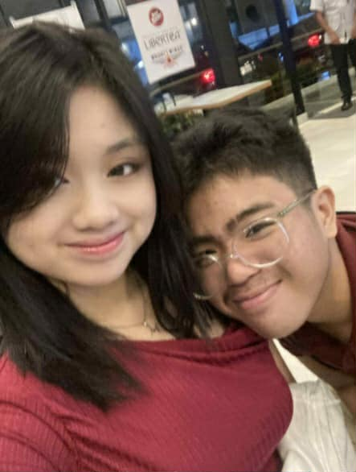
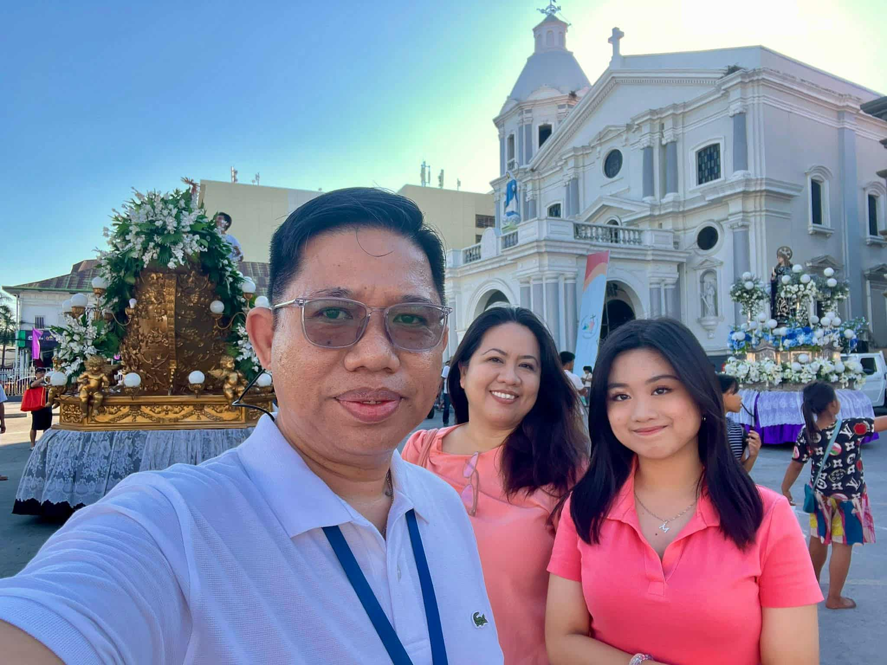

Get to know more about me here in my personal space!! (you could already tell what my fave color is based on the color I chose for my whole website :DD) Hope you'll enjoy!!
I see myself as an ambivert, though I often feel more like an introvert. I find peace in quiet moments and prefer deep, meaningful connections over large crowds. I’m a sensitive person who genuinely wants to help others, especially through leadership. For me, leading is not about power or control but about care and understanding. It means guiding others, listening to them, and helping them grow. My sensitivity allows me to connect with people deeply, and that makes me a better, more compassionate leader.
Micah Angelique R. Jimenez.
15 years old.
June 30, 2010.
I’ve always loved singing and playing instruments, finding pieces of myself in every melody I create. Musicals and theater, especially Broadway, never fail to move me, they remind me how art can speak when words can’t. Beyond music, I find comfort in reading and writing, whether through poems, poetic essays, songs, or stories shaped by truth in journalism. Leadership has always been a part of me since elementary, not for recognition, but because guiding others makes me feel whole. Above all, I cherish the quiet moments with my loved ones and never forget to pray for them, and with them, because love feels deeper when it’s lifted in prayer.
This is a bit personal, but it’s a part of who I am. I’ve had my fair share of friendships and friend groups ever since elementary. I held them close to my heart and saw many of them as my own siblings. I loved them deeply, treasured every laughter, every memory, and every moment that made me feel like I finally belonged. But as time passed, things changed, bonds that once felt unbreakable slowly faded, leaving quiet spaces where joy used to live.
As much as I tried to hold on, I learned that sometimes, letting go is also an act of love, love for myself. I realized that I needed to put myself first, to rediscover my worth, to heal, and to value the few people who truly stayed by my side. I once thought I would fill this e-port with the names of those I called my forever friends, but maybe they weren’t meant to be part of my story right now.
I believe everything happens for a reason, and that God has His own timing. Maybe He’s taking away what’s temporary to make space for what’s meant to last. So I’ll keep trusting His plan, believing that one day, He’ll send the right people into my life, and when He does, I’ll be ready to welcome them with an open heart :>>
But for now, let me introduce to you the people who had stayed by my side (aside from my family ofcourse) during my lowest and when it felt like almost every one was against me.
As someone who validates feelings a lot, I focus on the real connections I have with my friends by staying through good times not only the bad times.
These are memories I cherish with people I love!

He's someone that I love a lot :>> Because after years of being unseen, unheard, and misunderstood, he became the quiet answer to all those prayers I thought God ignored. He actually saw the good in me when no one else did. He appreciated the smallest efforts I made, the kind that others never even noticed. He loved me not for what I could give, but for who I already was.
He makes me feel safe. He’s patient with my moods, gentle with my fears, and never makes me feel like too much. He stays, even when I’m silent. He listens, even when I don’t have the right words. When I break down, he doesn’t walk away, he holds me together quietly, like I’m something worth saving.
He reminds me that I’m not hard to love. That I deserve soft things, peace, and happiness too. He helps me see beauty in myself again, the kind that was buried under everything I have experienced.
He’s everything I prayed for, the person I asked God to bring into my life. I’m lucky to have him. No matter how much he thinks he’s luckier to have me, he would never know how grateful I actually am for him. He may never hear how I talk to God about him, how I pray for him every night, but I always do. I always pray for him to stay, for him to be okay. Despite the misunderstandings we had, we've been together for one year now and ongoing because we continue to put God at the center of our relationship and I pray that we continue to do so :>>
This is one memorable picture with him because this was taken during our first year together!! We celebrated the day with my family, went to watch a circus together and ate together :>> I have many more memorable moments with him but by far this is my most favorite one :>>
After everything I’ve been through with friendships, these two were the ones who stayed. They helped me through the moments I thought I’d face alone and reminded me what it truly feels like to have people you can trust. Right now, they’re the only best friends I have, and even though our bond is still new, I can already feel their sincerity. They’re genuine, kind, and real, and I’m so thankful for that.
I’m grateful for the way they made me feel seen again, for the warmth they brought when I thought I had no one left. I pray that this friendship continues to grow, that we become even closer, and that we create more memories worth keeping. I thank God for sending them into my life because maybe they’re part of the healing I’ve been praying for. :>>
This is one memorable picture I have with them because this was right before performing nutrichant where we won 1st place in!! We took a picture that day as the three people who had led the class through the performance task. By far, it is one of my favorite pictures with them :>>
I have a small family of three, and I love my mom and dad deeply. They’ve always been my biggest supporters, standing by me in everything I choose to do. They guide me with patience and love, teaching me what’s right and reminding me that no matter what happens, I’ll always have a home in them.
My mom is the toughest person I know. She’s the one who would do anything for me without a second thought. She’s my best friend, the one who always listens to my rants, tries her best to understand me, and stays patient even when I make it hard. She’s truly the best mom I could ever ask God for. My dad, on the other hand, is someone who always wants the best for both me and my mom. He’s not perfect, but then again, no one is. Despite everything we’ve been through, he’s the one I can always seek guidance from, the one whose words I’ll always carry with me. I love them both so much, and I thank God every day for blessing me with the best parents I could ever ask for.
During every Holy Week, my family has a tradition of doing Visita Iglesia together with just me, my mom, and my dad. It’s something I’ve always cherished, a quiet time of reflection and togetherness. My dad once made me promise that I’ll continue this tradition with my own family in the future, and I know I will. It’s a promise I intend to keep, not just for him but for the faith and love that bind us together. :>>